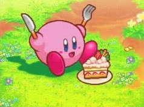

Kirby camina alegremente por los campos verdes de Dream Land. Lleva un pequeño plato con una rebanada de pastel de fresa. El sol brilla y Kirby tiene una gran sonrisa.Kirby: "¡Poyo!" .

derepente, una mariposa pasa volando cerca de su nariz. Kirby se distrae un segundo para mirarla con asombro. Sus ojos brillan mientras sigue el vuelo del insecto.
}